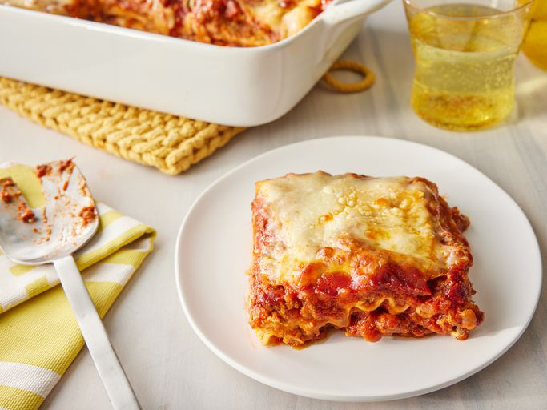

World's Best Lasagna

When John Chandler submitted this lasagna recipe to Allrecipes more than 20 years ago, he had no idea how successful it would become. One of our top-performing recipes of all time, World's Best Lasagna racks up more than 7 million views per year and has ranked among the most popular lasagna recipes on the internet for two decades.
Ingredients
- Meat This super meaty lasagna has sweet Italian sausage and lean ground beef.
- Onion and garlic:An onion and two cloves of garlic are cooked with the meat to add tons of flavor.
- Tomato products:You'll need a can of crushed tomatoes, two cans of tomato sauce, and two cans of tomato paste.
- Sugar:Two tablespoons of white sugar add subtle sweetness and enhance the flavor of the sauce.
- Spices and seasonings:This lasagna recipe is flavored with fresh parsley, dried basil leaves, salt, Italian seasoning, fennel seeds, and black pepper.
- Noodles:Use store-bought or homemade lasagna noodles.
- Cheeses:Parmesan, mozzarella, and ricotta cheese make this lasagna extra decadent.
- Egg:An egg helps bind the ricotta so it doesn't ooze out of the lasagna when you cut into it.
Steps
- Make the meat sauce.
- Cook the noodles.
- Make ricotta mixture
- Layer the lasagna according to the recipe instructions
- Cover with foil and bake
- Let the lasagna rest before serving